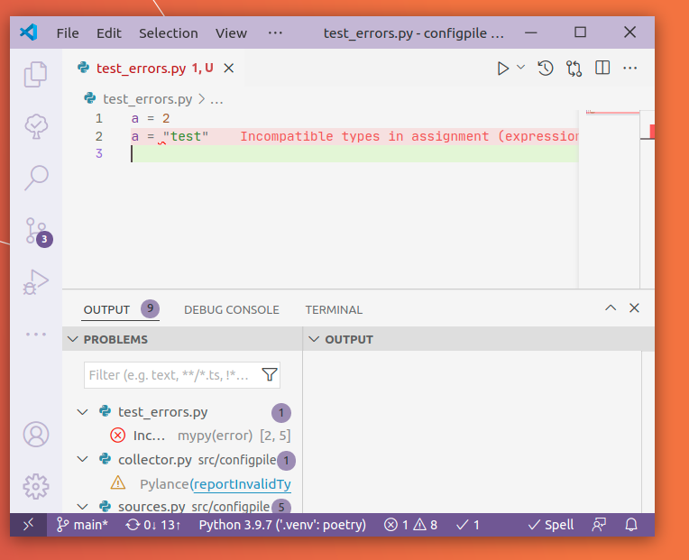
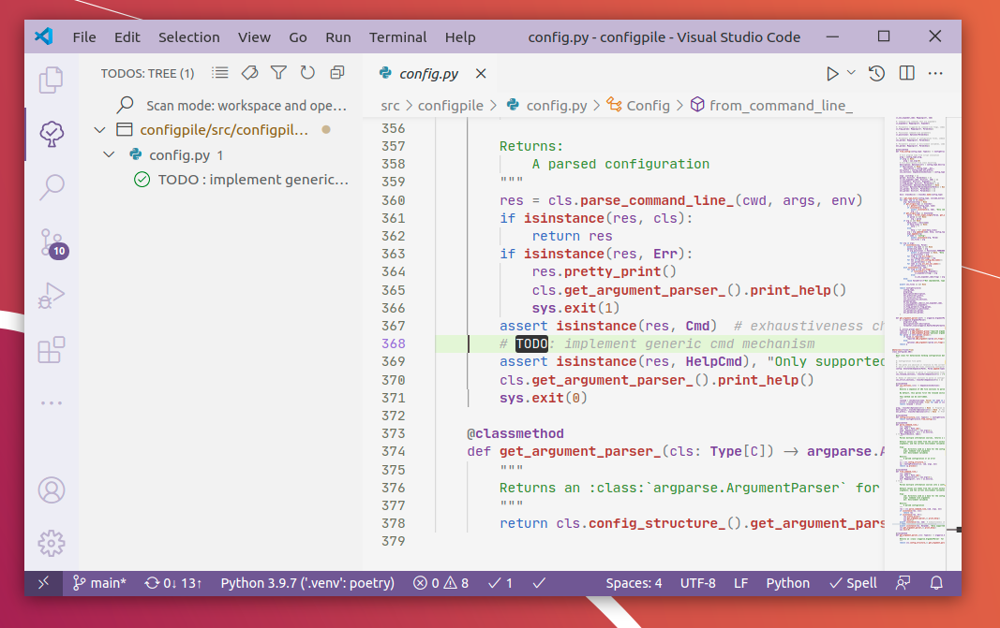
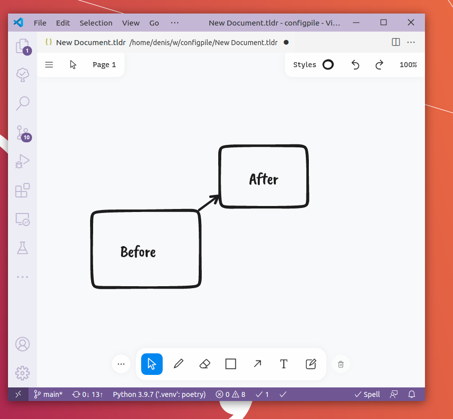
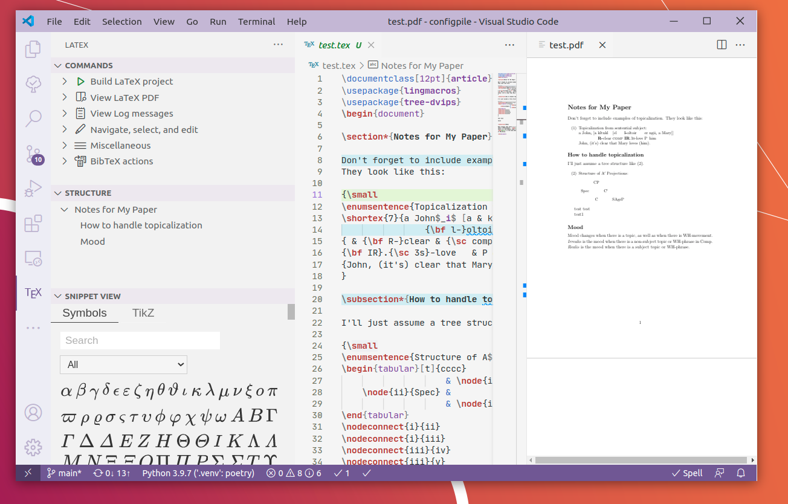

E. Additional extensions
Contents
E. Additional extensions¶
Nice extensions for coding¶
Partial Diff¶
File comparison tool. Invaluable!
Error Lens¶

Displays errors inline with the source code. However, error hints do not move with the source code during editing, so using this extension is a matter of taste.
Todo Tree¶

This extension collects the TODO: xxx comments through the project and displays them in a tree.
tldraw¶

Excellent drawing tool, if your computer is equipped with a touchscreen.
I wasn’t able to get pressure sensitivity working on Linux using a Huion tablet; and the PNG export feature is missing as of March 2022.
For scientists¶
LaTeX Workshop¶
 Complete LaTeX editing environment. Builds PDFs on the fly. Has bidirectional PDF<->LaTeX synchronization. Math preview on mouse hover.
Warning: Includes its own PDF viewer, which conflicts with other PDF viewer extensions, so uninstall those if you installed them.
Data science¶
HDF5 Preview¶
This extension explores the structure of HDF5 files, but is pretty limited when it comes to data visualization.